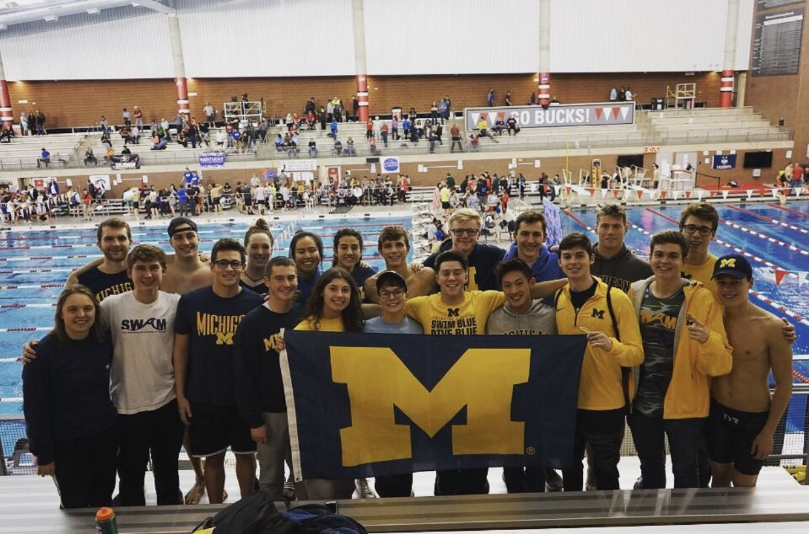

Michigan Club Swimming
Hello and welcome! We are Michigan Club Swimming, and our goal since 2015 has been to promote a more relaxed environment for University of Michigan students to continue the sport. Currently, our roster stands at 160+ athletes. We welcome swimmers of all experience levels, from just beginning the sport to competitive athletes at the national level. We know many of our swimmers have experienced burnout with swimming growing up, and we strive to make the sport fun again -- while also competing at a high level!
Our club is made up of over 160 active members who practice and compete together. We offer three coached practices weekly, all from 9-10:30PM. Sunday practice is held at the CCRB, and Tuesday and Wednesday practices are held at the Mack Pool off-campus. Carpools will be arranged to drive to Mack on Tuesday’s and Wednesday’s. We don’t have any attendance requirements for practice; you get out of this team what you put into it!
We typically compete at 1 meet monthly, which are hosted by other university club swim teams anywhere in the midwest. Meets are held on Saturday afternoons, and if the meet is more than 3 hours away, we stay in a hotel together on the Friday night before. Meets are a super fun way to bond with teammates and get back into racing! Our season culminates in a national championship meet that will be held in April at Georgia Tech. In 2019, we placed in the top 30 of college club swimming programs nationwide.
Fill out the form below if you would like to be added to our email interest list!